维护时间：2026-08-25（git 2e1a747）· 权威数据源 data/runs_fixed/*_fixed/ · 口径见 agents.md §1 · 数值细节见 experiment-log.md 与 experiment-lines.md。
仓库里存在 三套独立的命名系统，叠在一起就容易懵：
| 记号 | 含义 | 说明 |
|---|---|---|
| v50 | 评估节奏：val + freq-bin 每 50 步评估一次 | 最早期的注入点实验（M1）用；2000 步只有 40 个点，曲线粗。 |
| v10 | 评估节奏：val + freq-bin 每 10 步评估一次 | 后来定的标准（VAL_LOSS_INTERVAL_STEPS = 10）；2000 步 200 个点，能看到 epoch replay 台阶细节。这就是 M2 的"v10"。 |
| v2 波次 | 重刷波次 2：优化器新标准 β₂=0.99（无动量）+ 表 LR ×2 | 2026-08-24 用户拍板；run 后缀 _v2_fixed。模型本身没变，变的是优化器口径。 |
| v3 波次 | 重刷波次 3：freq-bin train 侧改用当前训练 batch（online） | 2026-08-25 用户拍板；run 后缀 _v3_fixed。之前是 4-batch 诊断窗口，判为不一致做法。 |
| v4 波次 | 重刷波次 4：uniform LR（constant schedule） | 2026-08-25 用户拍板；run 后缀 _v4_fixed。去掉 warmdown 的时间结构，避免与「记忆 vs 泛化」动力学混淆；v2/v3 降级为含 warmdown 的历史口径。 |
| uniform LR | 学习率全程恒定（--lr_schedule constant） | v4 基线。生产用 cosine/warmdown 是为 maximize performance；可解释性实验需要 isolate mechanism，故用 uniform 而非 cosine。 |
| M1–M7 | 主线 nanoGPT 实验线编号 | M2=注入点消融、M3/M4=表优化器、M5/M6=shard 剂量、M7=短 epoch×β₂。 |
| L1–L5 | toy 理论任务线（独立小实验） | L1 查表记忆、L2 Markov 闭式解、L3 采样律、L4 幂律、L5 优化器伪影。 |
| N1–N4 | 自然语言 5gram 实验 | order=5 表在真实语料上的 gap。 |
| S1 | 三轴 scaling（epoch / table / frequency） | 极简 setting 下的 scaling 实验线，结果在 data/runs_scaling/。 |
| _fixed | 修复 bug 后的权威数据标记 | 只有带 _fixed（含 _v2_fixed/_v3_fixed/_v4_fixed）的 run 是合法数据；作废数据已彻底删除。 |
| current-batch / online | train loss 取"当前训练 batch" | v3 起的标准；与 online train_loss 同一 forward，零额外计算。 |
| 新标准 | β₂=0.99（无动量）· 表 LR ×2（表实际 0.008）· uniform LR | 2026-08-24 拍板优化器；2026-08-25 拍板 uniform LR。所有新 launcher 显式传 --table_betas 0.0,0.99 --table_lr_scale 2.0 --lr_schedule constant。 |
一句话：v50/v10 是"评估多密"，v2/v3/v4 是"按哪个口径重刷"，M/L/N/S 是"哪条实验线"，_fixed 是"这是不是修完 bug 的合法数据"。
合并单元格 = 同大类/同 setting 共享；图片缩略图已放在对应实验行的第四列，点击图片可查看原图；comments 列白框可直接点入填写（本地打开时输入内容不会保存，仅供浏览标注）。
打开独立《Gap 的数学理论与实验证据》：理论报告只引用本表中的稳定锚点，不把解析 toy、历史 compile 和当前标准 run 混为同一证据等级。
| 实验大类 | 实验名称 | 实验 setting | 统计处理 / 画的图（图已内嵌） | 状态 | comments（手填） |
|---|---|---|---|---|---|
| 主线 注入点 |
M2 注入点消融 v10 （历史口径，被 v2 取代） |
input/y/v/nogram 四臂；2000 步；val 每 10 步；v10 时代口径（β₂=0.999·×1） | 注入点 loss/gap 曲线；频率 bin 双轴图；gap-vs-frequency 图；loss-gap-table-RMS 对齐
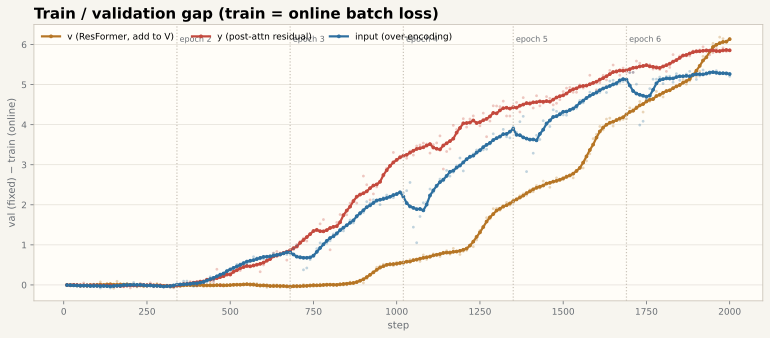 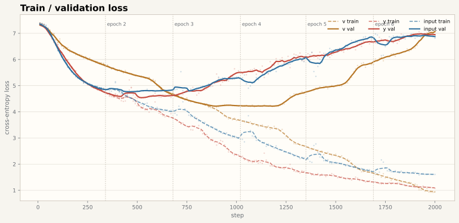 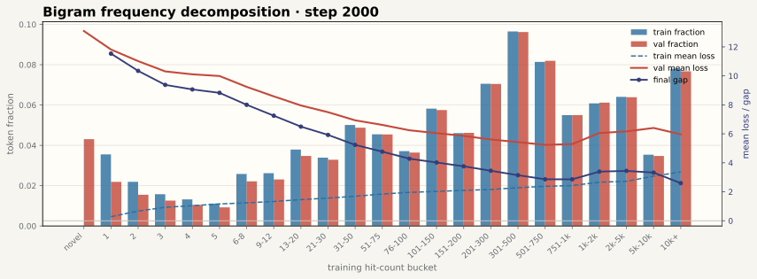 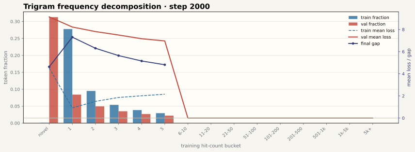 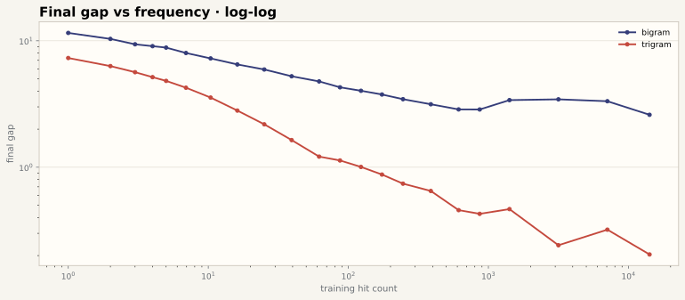 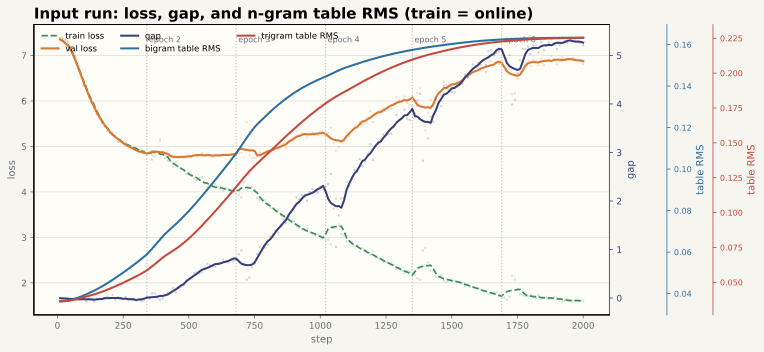 |
✅ 完成 | |
| M2-v2 注入点消融 （新标准 β₂=0.99·×2，当前权威） |
同四臂；2000 步；bf16+compile（v2 波次）；seed 42 + s43/s44 复现 | 注入点 gap/loss 曲线（原始点 + 3 点平滑线 + epoch 边界虚线）；final gap 对比；频率 bin 双轴图（23 桶） | ✅ 完成 | ||
| M2-v3 注入点消融 （current-batch 口径，含 warmdown） |
同四臂；freq-bin train 侧 = 当前训练 batch per-token loss（零额外 forward） | 同上 + freq-bin 的 train 侧与 online train_loss 完全同 batch 校验；v3 独立图片待数据完成后重绘，不复用 v2 图片。 | 🟡 三机运行中 | ||
| M2-v4 注入点消融 （uniform LR，v4 基线 · 当前权威） |
同四臂；2000 步；--lr_schedule constant（uniform LR）；bf16 不 compile；seed 42 |
注入点 gap/loss 曲线（uniform LR 下无 warmdown 干扰）；final gap 对比；频率 bin 双轴图（current-batch 口径） | 🟡 运行中（360-2） | ||
| 剂量 扫描 |
M5 shard 大小扫描（dose） | train shards 0.25x–8x（12 档）；input 注入；2000 步；v2 新标准 | gap vs dose（对数-对数幂律 α≈−2）；gap@2000 对比；epoch 分界标注 | ✅ 完成（v2 12 点齐） | |
| M5-v3 剂量重刷 | 同 M5 + freq-bin current-batch | 🟡 运行中 | |||
| M6 epoch 对齐批（e6，实际 5 epoch） | 对齐 epoch 数（5 epoch）；0.25x–3x；无 LR schedule（勘误见 log §12） | epoch 对齐 gap 曲线；nogram 对照
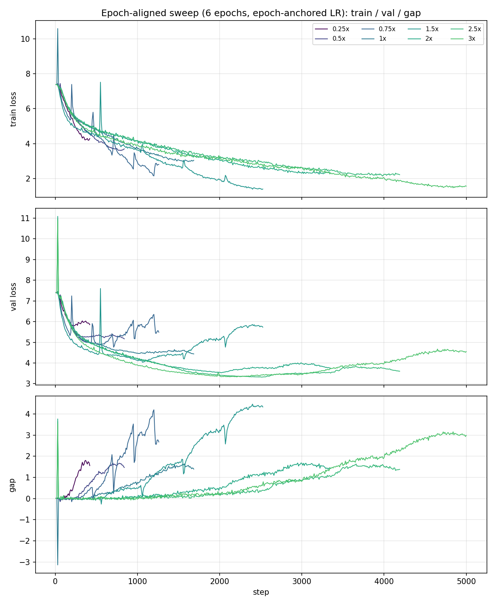 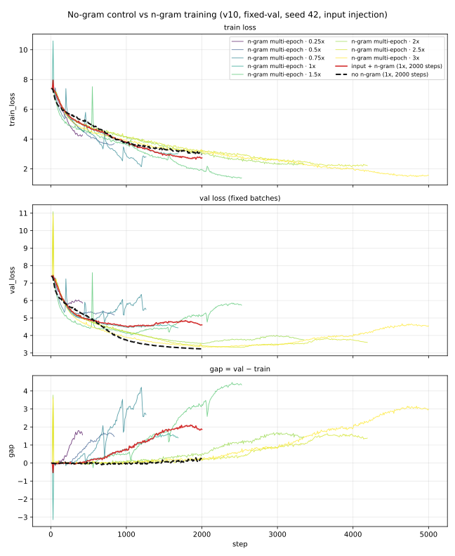 |
⚠️ 不完整：缺 4x–8x | ||
| 表 优化器 |
M3 Table 优化器 · 1x epoch | RMSProp/AdamW/SGD；LR 剂量（×1/×2/×4）；β₂（0.98/0.99）；1x / 2x epoch | 优化器对比 loss/gap；LR 剂量曲线；β₂ 曲线；1x vs 2x 对比 | ⚠️ β₂ 结论待修正 | |
| M4 Table 优化器 · 2x epoch | 同上（b2_099 0.64→2.00，+210%）
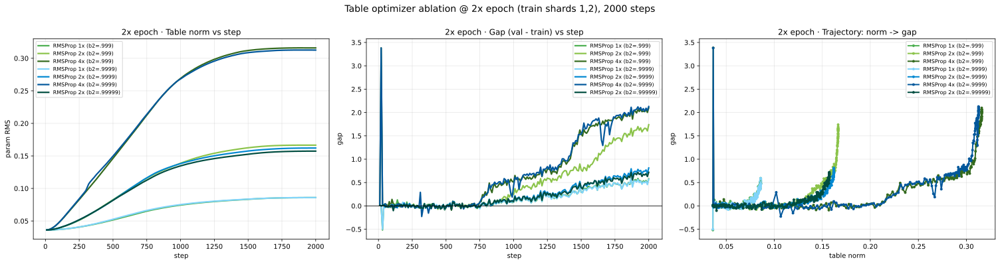 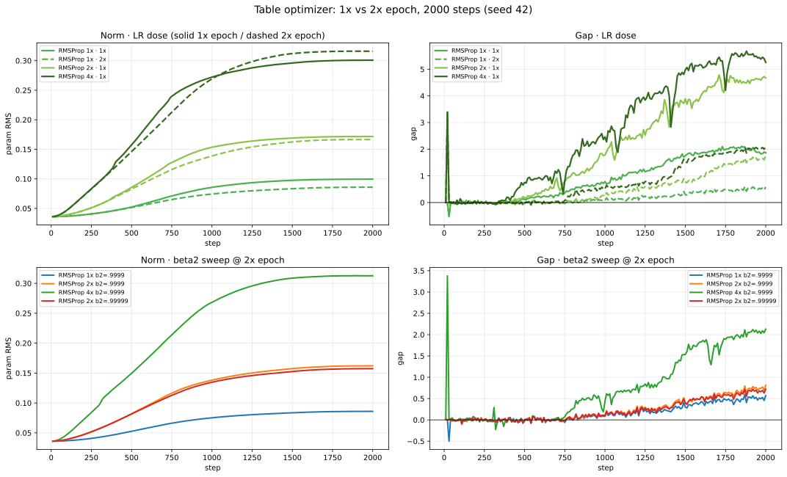 |
⚠️ 同上 | |||
| M3b 表学习率 × β₂ 消融深挖（附录） | 高表学习率体检；β₂×LR 消融 + 补点 | 附录报告 + figs（docs/appendices/lr_beta_ablation/）
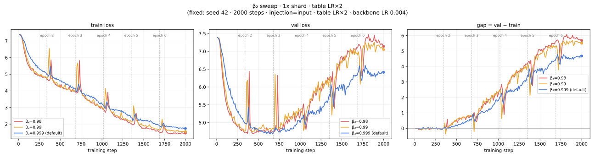 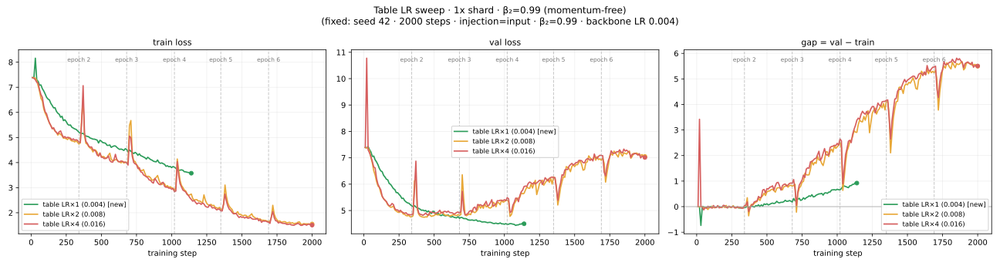 |
🟡 进行中 | ||
| M7 短 epoch × β₂ | 0.25x/0.5x 短 epoch；β₂=0.99 | per-epoch 台阶清晰度曲线
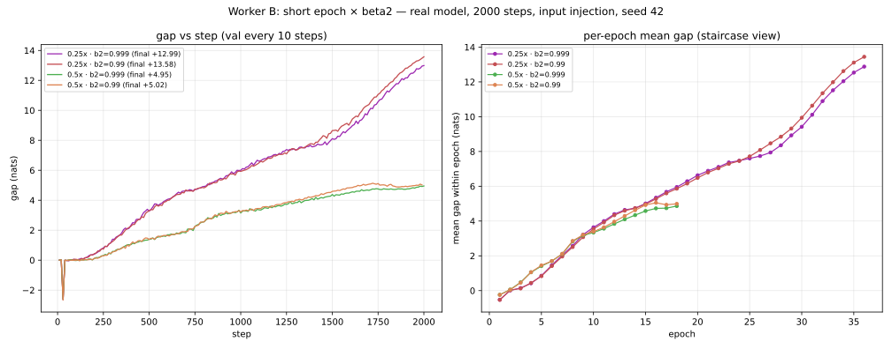 |
⚠️ 图未按 _fixed 重生成 | ||
| 因果 干预 |
Causal interventions（v2） | step 1000 干预：reset_e1 / reset_e2 / mask_readout / freeze_table / freeze_backbone | 干预前后 gap 对比（reset_e1 −75%、reset_e2 −98%、mask_readout −98%）
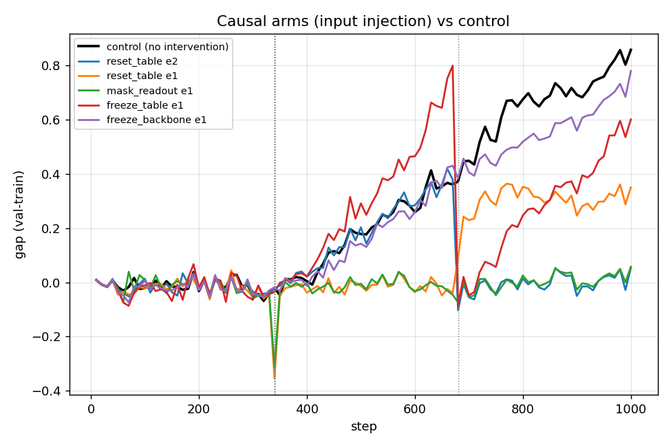 |
✅ 完成（v2） | |
| 三轴 scaling (S1) |
S1 epoch 轴 · fixed-step | L1–L4 前缀（42/84/168/337 batches）× bigram/trigram/both/nogram；1000 步 / 6 epoch 对齐 | gap vs epoch 长度；重播次数对齐下的 gap；多 seed 方向稳定性
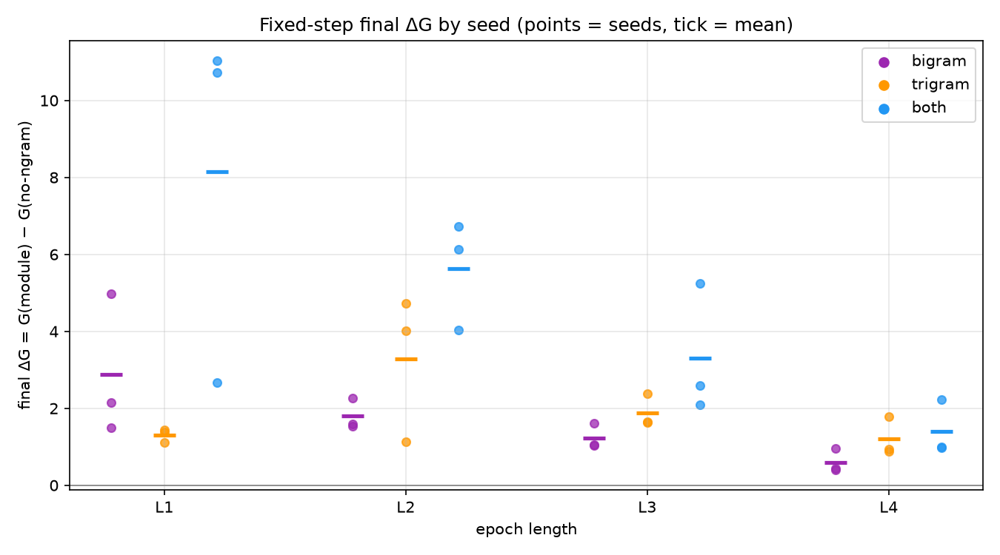 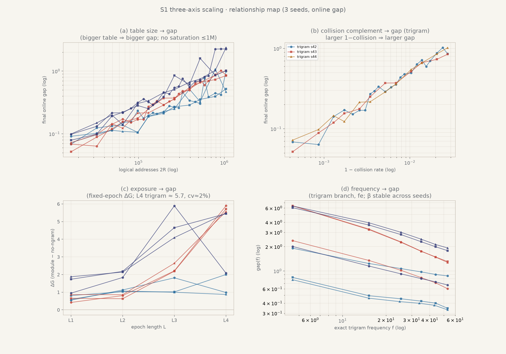 |
⚠️ 历史 compile 波次；no-compile 待重跑 | |
| S1 epoch 轴 · fixed-epoch | 同上 | ⚠️ 同上 | |||
| S1 table size 轴（clean 单表，新 SSOT） | --bigram_clean_table R；R 64K–4M + perfect（13 点）；1000 步；seed 42 |
clean 单表 gap-R 曲线（光滑单调）；相图（K/N vs gap）；perfect 零碰撞锚点；forking 图 | ✅ clean 网格完成 | ||
| S1 frequency 轴 | L4 + 1M × 4 arms；exact-frequency | G(E,f) 两因素模型检验
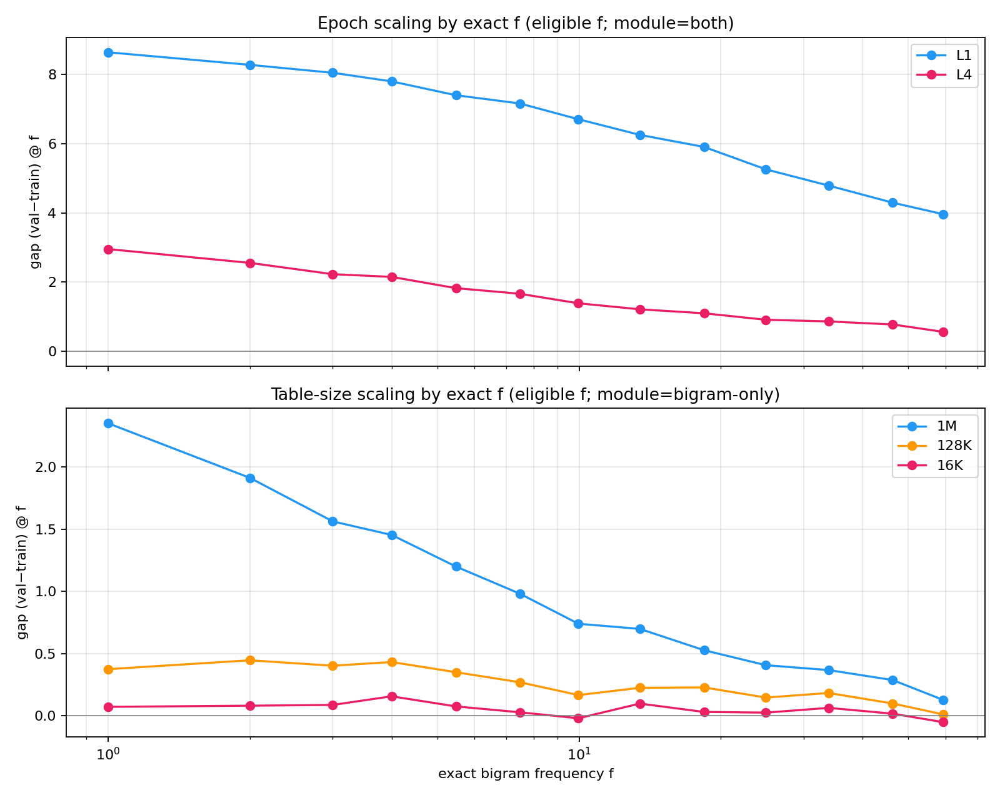 |
⚠️ 历史 compile；待重跑 | ||
| S1 backbone safety | 长训 no-ngram（5000 步） | 无表 backbone 是否产生 gap（final +16.66，量级参考）
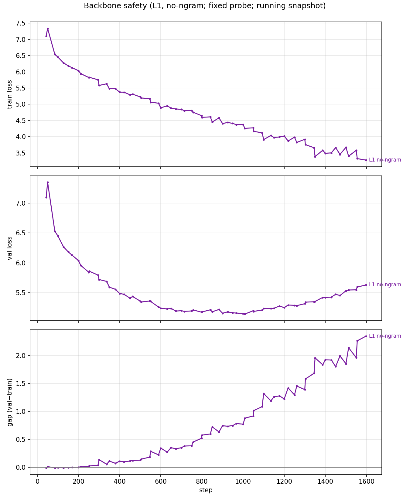 |
✅ 完成（旧口径） | ||
| 自然语言 5gram |
N1–N4 order=5 | 5gram context +trigram 注入 / 纯 transformer / LR ×1 / LR ×4；seed 42/43 | per-bucket gap；gap-freq 图
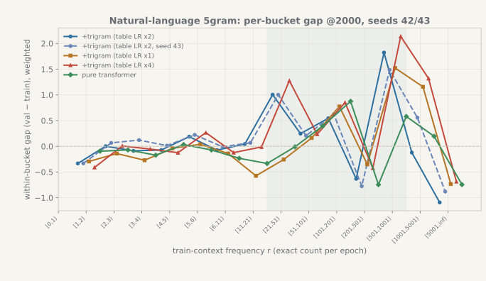 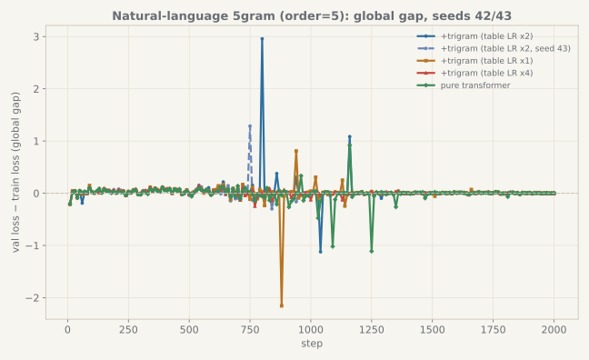 |
✅ 完成 | |
| 受控数据 干预 |
ngram5 数据生成（alpha 上采样） | 固定极简 setting，只动数据侧 alpha | gap(r) ≈ (K_eff−1)/r 检验 | 🟡 独立包，与主线正交 | |
| toy 理论 |
L1 查表记忆 × replay | 独立自包含 toy 实验；纯 numpy/torch；结果在 tasks/lN_*/results/ |
记忆-gap 主矩阵
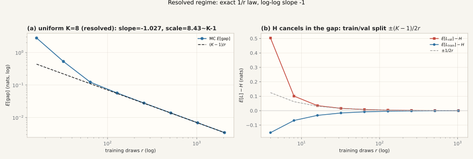 |
✅ | |
| L2 Markov 精确 gap | markov 三臂闭式解曲线
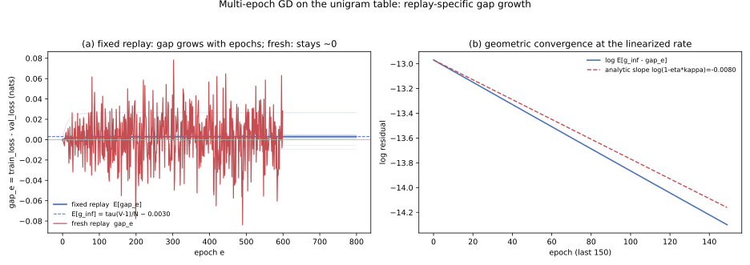 |
✅ | |||
| L3 单 context 采样律 | gap(r) 采样律图 | ✅ | |||
| L4 幂律合成数据 | gap vs samples 幂律 | ✅ | |||
| L5 优化器伪影 | RMSProp v 锯齿 / 表容量对照
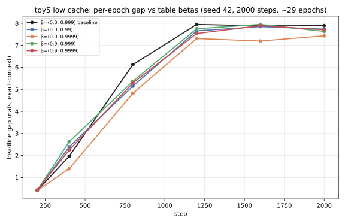 |
✅ |
注入点主线图（v2 当前权威）：docs/figs/main/；更多交互 HTML 版见同目录 fig_gap_loss.html、fig_gap_vs_frequency_*.html、fig_gap_by_freq.html。
其余图片已经放入上方对应实验行的“统计处理 / 画的图”单元格；原始文件仍保留在各自的图目录中。尚未有对应合法结果的图片不在此处虚构或重复展示。
| 模块 | 文件 | 职责 |
|---|---|---|
| 训练主程序 | code/train.py（1715 行） | vanilla nanoGPT + n-gram 表；3 注入点；MixedOptimizer（表 RMSProp/AdamW/SGD + backbone AdamW）；fixed 数据模式；freq-bin / exact-freq / probe 统计；干预接线 |
| 频率索引 | code/ngram_freq.py（501 行） | GlobalFrequencyIndex.build_from_chunks，与模型 hash 逐位置一致 |
| 表 occupancy | code/table_occupancy.py（251 行） | 行占用 / 碰撞 / 负载统计 |
| replay/epoch 纯函数 | code/gap_experiment.py（312 行） | 主线与 ngram5 共用 |
| 数据准备 | code/prepare_data.py / make_ngram_blocks.py | token shards；受控 block 构造 |
| 集群启动器 | code/cluster/*.sh | run_rerun_v2.sh（v2/v3 主线）、run_injpos*.sh、run_table_opt*.sh、run_shard_sweep*.sh、run_scaling_*.sh、run_clean_table_grid.sh |
| 受控数据干预 | ngram5_freq_gap/ | 第四维度：动数据不动模型 |
| 作图脚本 | docs/plot_scripts/ | canonical：gen_all_figures.py、gen_sweep_v2_figs.py、gen_shard_sweep_figs.py 等；图进 docs/figs/ |
| toy 线 | tasks/l1..l5/ | 独立自包含，纯 numpy/torch |
input 为主——x = wte(idx) + wpe(pos) + Σ ngram_ve，n-gram 向量直接加在 token 嵌入上（over-encoding，不走 attention）；y 注入在 attention 输出后加回 residual；v 注入在 attention 的 V 上（路径最间接）。nn.Embedding(R, 768)，一个 context → 一行 → 一个完整向量，单层、单 hash（--bigram_clean_table R，R 任意；与 perfect-map 组合 = 零碰撞锚点）。旧 4 层求和 + 2-hash 拼接（vocab×mult 表）已降级为历史框架。(0.0, 0.99) 表 LR ×2（=0.008）；backbone AdamW。β₁=0 即无动量（table_betas bug 已修：b2 = self.table_betas[1]）。fixed 模式 = 固定顺序 epoch replay（每轮从头重放同一 shard，L4=337 batches/epoch）；grad_accum 使 total batch = 147,456 tokens；bf16 autocast；默认不 compile。data/runs_fixed/*_fixed/ 是合法数据；作废数据已彻底删除。两个已知 bug（freq-bin 白吃 train batch、table_betas[1] 被覆盖）已修复并有验证 smoke（smoke_fixed_verify）。_v3 后缀；_fixed 标记「修复后」，_v3 标记「current-batch 口径」，命名即口径。md5sum 核对 code/train.py、code/ngram_freq.py、code/cluster/*.sh。agents.md §1（SSOT）→ experiment-lines.md（全景）→ experiment-log.md（登记簿+勘误）→ claims-ledger.md（断言台账）。结论必须带 run_id / step / seed。[HISTORICAL 4-LAYER FRAMEWORK]；current shell / Muon / RoPE 系结论一律 [DEPRECATED SETTING]。唯一留白：experiment-log.md 中 v10 时代（pre-v2）数值尚未回填为 _fixed（T1/T2/T3 待办）；v3 波次运行中，回传后需用 current-batch 口径重绘 freq-bin 图。
{kind=link}
{kind=link}
{kind=link}
{kind=link}
{kind=link}
{kind=link}
{kind=link}
{kind=link}
{kind=link}
{kind=link}
{kind=link}
{kind=link}
{kind=link}
{kind=link}
{kind=link}
{kind=link}
{kind=link}
{kind=link}
{kind=link}
{kind=link}
{kind=link}
{kind=link}
{kind=link}
{kind=link}
{kind=link}
{kind=link}
{kind=link}
{kind=link}
{kind=link}
{kind=link}
{kind=link}
{kind=link}
{kind=link}
{kind=link}
{kind=link}